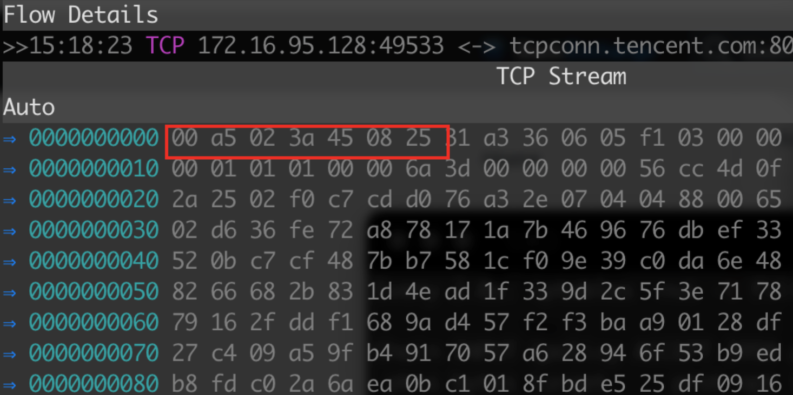

屏蔽钉钉微信等APP的几种思路
背景
方法
屏蔽IP/域名
dnsmasq
使用dnsmasq里面的重定向域名功能，将域名指定到一个不存在的地址，或者错误的地址，可以让解析失效,比如钉钉，可以在dnsmasq.conf里添加这两行，强制其解析到127.0.0.1。
address=/dingtalk.com/127.0.0.1 address=/dingtalkapp.com/127.0.0.1
iptables
iptables这个方法就比较复杂了，首先要抓到域名解析对应的IP地址，然后将其整理汇总。 以钉钉的login.dingtalk.com的解析地址为例 我本地解析到的IP地址是106.11.40.32，通过bgp.he.net查询到其网段所属的ASN有两个: 106.11.40.0/21和106.11.0.0/16,取其中较小的网段106.11.40.0/21来进行屏蔽,避免误屏蔽。
iptables -A INPUT -s 106.11.40.0/21 -j DROP iptables -A OUTPUT -s 106.11.40.0/21 -j DROP
路由黑洞
路由黑洞和上述iptables原理一致，都是屏蔽指定的IP段，代码如下
ip route add blackhole 106.11.40.0/21
总结
以上方法只能说是简单粗暴，像QQ微信钉钉这种大厂出品的会有对应的反屏蔽策略，比如QQ： 假如发现你屏蔽DNS解析，那我就直连IP，不走本地解析。 IP屏蔽这个就更原始了，各个大厂的IP段数不胜数，而且误封的可能性极大。所以以上这几种方法只适用于： 登录IP/域名固定的，解析单台服务器的APP或者网站这些场景。
精准匹配
iptables
这里说的精准匹配是指域名或者对应的数据包头，以QQ和钉钉为例，通过抓包知道钉钉的登录服务器为login.dingtalk.com,QQ发送给登录服务器的数据包有规律且前几位十六进制字符串为00 a5 02 3a 45 08 25，如下图所示 
string 模块
iptables里的string模块有两种匹配方式，一种是常规的字符串，另一种就是十六进制字符串，使用方法分别如下
# 屏蔽钉钉登录服务器 iptables -A INPUT -m string --string "im.dingtalk.com" --algo bm -j DROP
# 屏蔽QQ登录服务器 iptables -A INPUT --match string --algo kmp --hex-string '|00 a5 02 3a 45 08 25|' -j DROP
以上两种都是屏蔽常规的字符串，下面这种屏蔽PC 微信的方法需要用到正则表达式模块，需要自己单独编译，推荐DKMS编译 https://github.com/smcho-kr/kpcre/wiki/Step-by-step-installation-guide 这个正则表达式的使用方法和平时我们使用的不大一样，参考以下文章 https://github.com/smcho-kr/kpcre/wiki
在编译安装完成之后，可以运行以下命令来屏蔽微信登录。屏蔽原理是匹配MicroMessenger这个HTTP UA 如果匹配到就丢弃数据包
iptables -A INPUT -m string --string '/^MicroMessenger.*/' --algo pcre -j DROP
bpf 模块
bpf模块这个比较新，需要在iptables 1.4.19以上版本 其中用到的nfbpf_compile这个命令在centos 7这个版本是没有的，可以使用tcpdump生成对应的cBPF字节码
ip tuntap add tun0 mode tun
ip link set tun0 up
tcpdump -ddd -i tun0 dst host im.dingtalk.com | sed ':a;N;$!ba;s/\n/,/g'
对应的nfbpf_compile命令如下
nfbpf_compile RAW 'dst host im.dingtalk.com'
具体的文档可以参考这个 https://fossies.org/linux/iptables/extensions/libxt_bpf.man
还是以钉钉为例
#以下代码未验证 iptables -A INPUT -m bpf --bytecode "`nfbpf_compile RAW 'dst host im.dingtalk.com'`" -j DROP
xdp
XDP(eXpress Data Path) 是Linux 4.8之后基于ePBF(extended BPF)推出的一个新特性，其特点是数据直接发送到网卡，可以实现高性能处理数据。 通过编写对应的C程序来实现对特定数据包的拦截或者放行，具体实现可以参考这个项目
https://github.com/xdp-project/xdp-tools/tree/master/xdp-filter
因涉及到底层的数据解析匹配，难度较大。但是性能这块会比iptables和上述几种方法快很多，具体数据对比可参考此链接
总结
这篇文章只是对自己在工作过程中的一个思考整理，如有遗漏或者不正确的地方还请见谅。另外打一个小广告，我创建了一个Layer 7防火墙的项目，大概架构是特征库+XDP来实现高性能数据屏蔽处理。感兴趣的同学可以考虑加入下